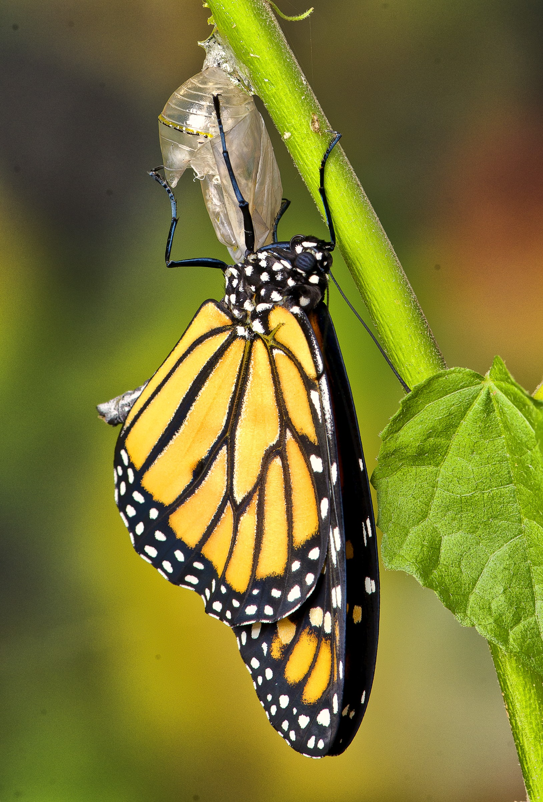
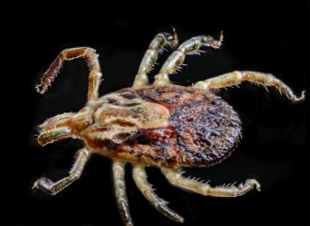
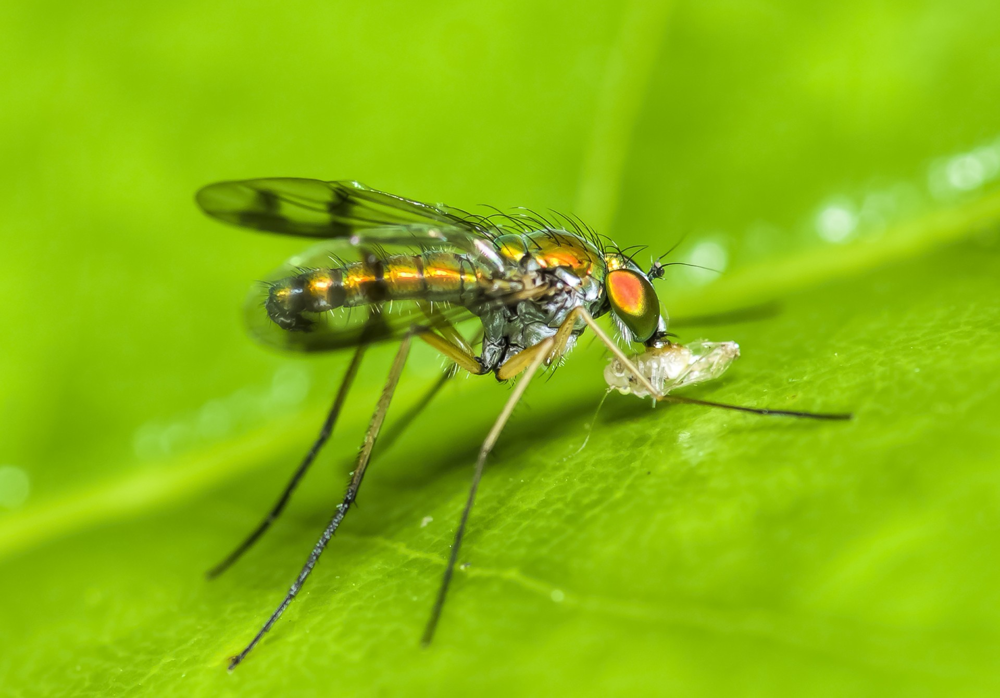
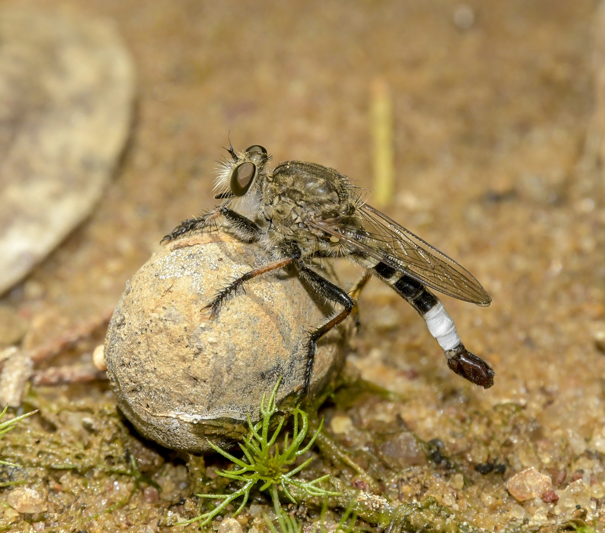

"Field Trip Announcement above"
Join us on Monday July 22th in Person or Zoom for Presentation "Why aren’t my photos sharp and five other mistakes to avoid in your photography."

Presented by Brian Loflin-Photographer, Author, Teacher, and Consultant
Join us on Monday July 22th in Person or Zoom for Presentation "Why aren’t my photos sharp and five other mistakes to avoid in your photography."

Presented by Brian Loflin-Photographer, Author, Teacher, and Consultant
Join us on Monday July 22th in Person or Zoom for Presentation "Why aren’t my photos sharp and five other mistakes to avoid in your photography."

Presented by Brian Loflin-Photographer, Author, Teacher, and Consultant
Join us on Monday July 22th in Person or Zoom for Presentation "Why aren’t my photos sharp and five other mistakes to avoid in your photography."

Presented by Brian Loflin-Photographer, Author, Teacher, and Consultant
Join us on Monday July 22th in Person or Zoom for Presentation "Why aren’t my photos sharp and five other mistakes to avoid in your photography."
Presented by Brian Loflin-Photographer, Author, Teacher, and Consultant
Join us on Monday July 22nd at Zilker Botanic Garden Center or on Zoom 7:00pm for Presentation
The presentation will highlight common mistakes that preclude photographic images to be their very best and ways to prevent them.
About Brian Loflin:
Photographer, Author, Teacher, and Consultant
Brian Loflin is a highly respected photographer, author, teacher, and consultant. His seasoned professional career spans more than five decades in the advertising, aviation, bio-medical and publishing industry.
Brian is a TAMUK adjunct faculty member currently teaching a curriculum in Wildlife Photography. Encompassing six, three-hour classes, the curriculum provides a classroom, hands-on, laboratory, and outdoor photography experience using provided top-of-the-line professional equipment. Successful completion of the eighteen semester hours leads to a Minor in Wildlife Photography.
As a graduate biologist with an extensive background in marketing and communications, his early experience was as a medical photographer and a freelance photojournalist producing materials that served a variety of educational, technical and consumer publications. Later, he held senior marking positions at several international aerospace firms, serving airlines and aviation organizations on five continents.
Brian's photographs have been published in many international magazines as well as books and other publications, including major news agencies of the world. His work has won numerous industry awards, but most importantly, his work has won the admiration and respect of his clients.
Brian is active in several professional industry organizations including Internal Society of Aviation Photographers, and American Society of Media Photographers. He is a current member of Nikon Professional Services, and Organization of Biological Field stations. He is past president of the Minnesota Nature Photographers and founder and current president of the Austin Shutterbug Club.
Brian is a highly regarded teacher whose passion is in passing his knowledge and vision along to others. He held similar teaching positions the University of Texas at Austin, University of California at Riverside and Riverside Community College. Brian actively teaches and conducts seminars and workshops in many areas of photography along with nature photography tours and workshops in various global destinations.
Brian has published numerous papers, articles and other features on wildlife and biological photography. Brian also authored, photographed, and designed Grasses of the Texas Hill Country and Texas Cacti, two photographic field guides published by Texas A&M University Press and available at most book sellers. Texas Wildflower Vistas and Hidden Treasures is now at the publisher. Brian’s other books, Advanced Macro Photography for Nature Scientists, Biomedical Photography & Digital Imaging are also available. A new work, Professional Wildlife and Conservation Photography is nearing completion.
To see a collection of Loflin’s work, please visit his blog at http://bkloflin.wordpress.com and web site www.thenatureconnection.com.
facebook group
join our large group discussion on facebook

Monarch Emergence Video by Linda Avitt